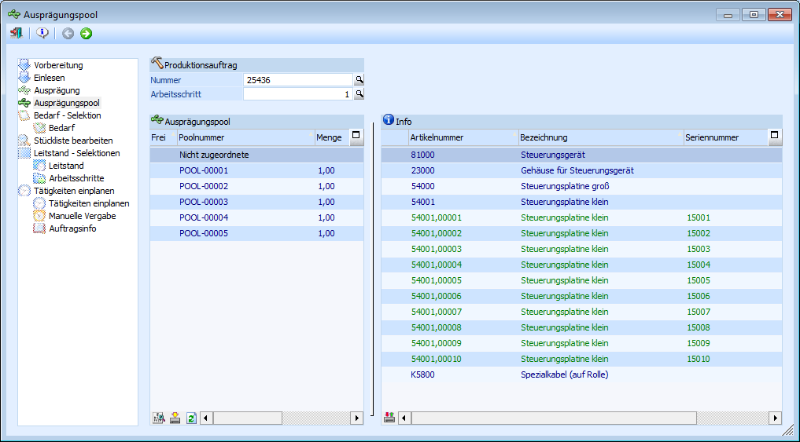
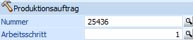
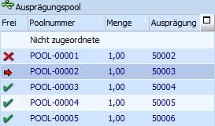
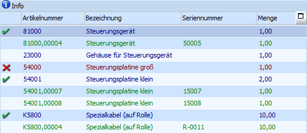
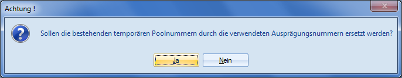
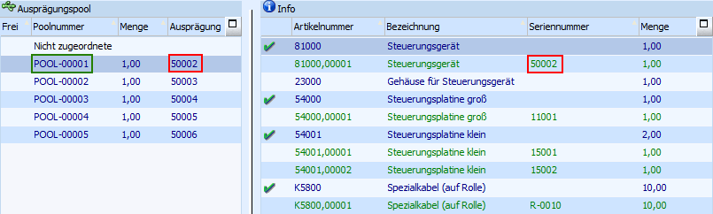
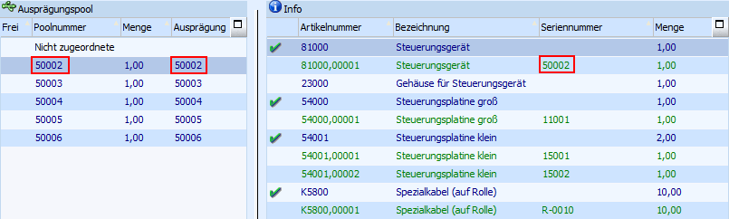
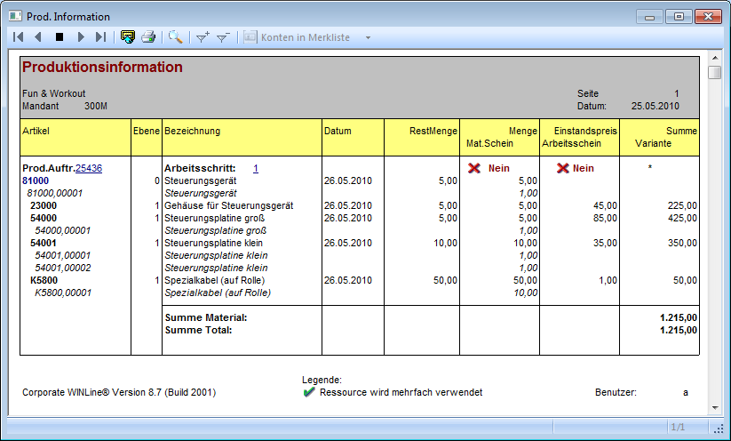
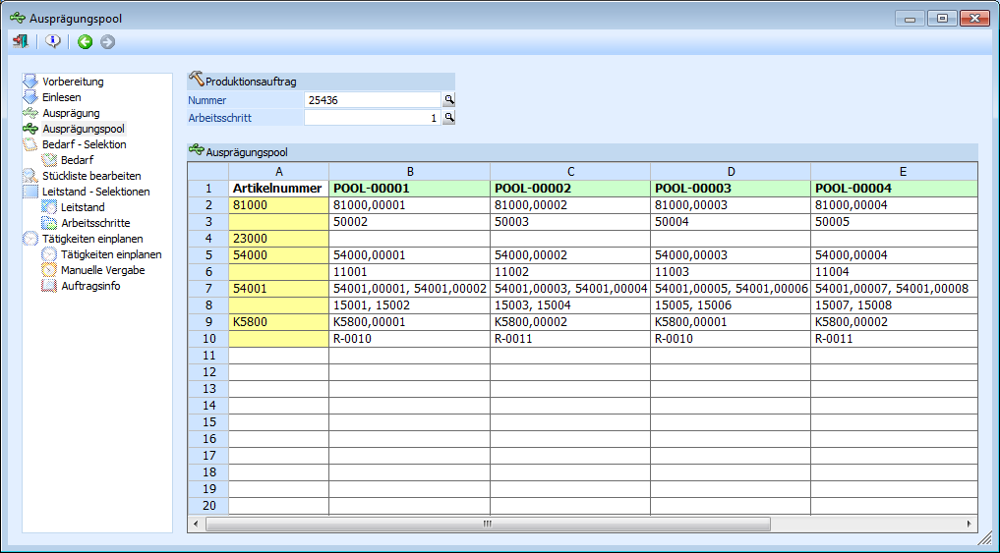

Im Programm "Ausprägungspool", welcher über den Menüpunkt
1 WinLine PPS
1 Produktion
1 Ausprägungspool
erreicht wird, kann die Zuordnung der Ausprägungspools pro Produktionsauftrag getroffen bzw. verändert werden.
Um Ausprägungspoolzuordnungen / -änderungen vornehmen zu können, wird zuerst der Produktionsauftrag samt Arbeitsschritt ausgewählt und über die Tabelle "Ausprägungspool" der Bereich markiert, von welchem aus ein Ident- bzw. Chargenartikel zugeordnet werden soll.
Die gewünschte Ausprägung wird anschließend per Drag & Drop aus der "Info"-Tabelle auf einen entsprechenden Ausprägungspool (oder den bereich "Nicht zugeordnete") geschoben.

Der Bildschirm ist in drei Bereiche gegliedert:
ü Produktionsauftrag (Auswahlbereich)
ü Ausprägungspool (Übersichtsbereich)
ü Info (Informationsbereich)
Produktionsauftrag (Auswahlbereich)

An dieser Stelle wird durch Auswahl des Produktionsauftrags und der Arbeitsschrittnummer ausgewählt, welche Poolzuordnung bearbeitet werden soll.
Ø Nummer
Hier wird der zu bearbeitende Produktionsauftrag hinterlegt.
Hinweis
Mit der rechten Maustaste im Feld kann im Kontextmenü-Eintrag "aktuelle Produktionsaufträge" einer der 20 zuletzt verwendeten Produktionsauftragsnummer ausgewählt werden. Die selektierte Produktionsauftragsnummer wird automatisch ins Feld "Produktionsauftragsnummer" eingefügt.
Ø Arbeitsschritt
Innerhalb eines Produktionsauftrags kann es mehrere Arbeitsschritte geben, in welchen jeweils mit Poolzuordnungen gearbeitet wird. Aus diesem Grund ist die Auswahl des Arbeitsschritts notwendig.
Ausprägungspool (Übersichtsbereich)

In dieser Tabelle werden die existierenden Ausprägungspools dargestellt. Außerdem gibt es den Punkt "Nicht zugeordnete" unter welchem alle noch nicht zugeordneten Ident- bzw. Chargenartikel geführt werden.
In der Spalte "Frei" können folgende Symbole (werden nun angezeigt, wenn ein Ident- bzw. Chargenartikel verschoben wird) dargestellt werden:
ü Durch die Darstellung dieses Symbols wird gekennzeichnet, dass der Artikel, der zu verschiebenden Ident- bzw. Chargenummer, in diesem Ausprägungspool noch nicht zugeordnet wurde.
ü Durch die Darstellung dieses Symbols wird gekennzeichnet, dass der Artikel, der zu verschiebenden Ident- bzw. Chargenummer, in diesem Ausprägungspool bereits zugeordnet wurde.
ü Dieses Symbol wird bei dem Ausprägungspool angezeigt, aus welchem heraus ein Ident- bzw. Chargenartikel verschoben werden soll.
Info (Informationsbereich)

In dieser Tabelle wird der Inhalt des ausgewählten Ausprägungspools bzw. des Bereichs "Nicht zugeordnete" angezeigt. Dabei wird zuerst eine Hauptzeile, welche den unausgeprägte Ident- bzw. Chargenartikel darstellt, ausgewiesen, gefolgt von den ggfs. existierenden (zugeordneten) Ausprägungen.
In der nicht betitelten (ersten) Spalte können folgende Symbole existieren:
ü Dieses Symbol zeigt an, dass die benötigten Ident- bzw. Chargennummern bei dem Artikel vollständig zugeordnet wurden.
ü Dieses Symbol zeigt an, dass die benötigten Ident- bzw. Chargennummern bei dem Artikel noch nicht vollständig zugeordnet wurden.
Tabellenbuttons
Ø Mehrfachzuordnungen
Wenn in einem Ausprägungspool zu einem Artikel mehrere Ident- bzw. Chargennummern hinterlegt wurden, dann wird dieses über den Button "Mehrfachzuordnung" angezeigt.
Ø Ausprägungspoolnummer als neue Poolnummer übernehmen
Es können die bisher bestehenden Ausprägungspoolnummern durch die Ident- bzw. Chargennummern des zu produzierenden Artikels ersetzt werden.
Bevor dieses durchgeführt wird, muss eine Sicherheitsabfrage entsprechend bestätigt werden.

Beispiel
Der Produktionsartikel "Steuerungsgerät" wurde ausgeprägt (Identnummer "50002") und der Poolnummer "POOL-00001" zugeordnet.

Durch die Übernahme wird die Ausprägungspoolnummer "POOL-00001" durch die Nummer "50002" ersetzt.

Hinweis
Der Button "Ausprägungspoolnummer als neue Poolnummer übernehmen" ist nur anwählbar, wenn der zu produzierende Artikel vollständig ausgeprägt ist und alle Ausprägungen eine Ausprägungspoolzuordnung erhalten haben (Ausprägung bzw. Poolzuordnung der Komponenten ist irrelevant).
Ø Anzeige aktualisieren
Über den "Anzeige aktualisieren"-Button kann die Anzeige der Tabellen "Ausprägungspool" und "Info" aktualisiert werden.
Ø Zuordnung automatisch durchführen
Die unter dem Punkt "Nicht zugeordnete" gelisteten Ident- bzw. Chargennummern automatisch Ausprägungspools zugeordnet.
Buttons
Ø  Ende
Ende
Der Programmbereich wird verlassen und alle getätigten Änderungen automatisch gespeichert.
Ø  Journal
Journal
Durch Drücken dieses Buttons wird die Auswertung "Produktionsinformation" am Bildschirm ausgegeben. In dieser wird eine Übersicht über den ausgewählte Ausprägungspool samt der zugeordneten Ident- bzw. Chargenartikeln angezeigt.

Ø 
 Vor / Zurück
Vor / Zurück
Über den Button "Vor" wird eine WinLine MESOCalc-Tabelle aufgerufen, welche alle Ausprägungspools mit den entsprechend zugeordneten Ident- bzw. Chargenartikeln auflistet. Mit dem Button "Zurück" gelangt man wieder in die Ausprägungspoolzuordnung.
